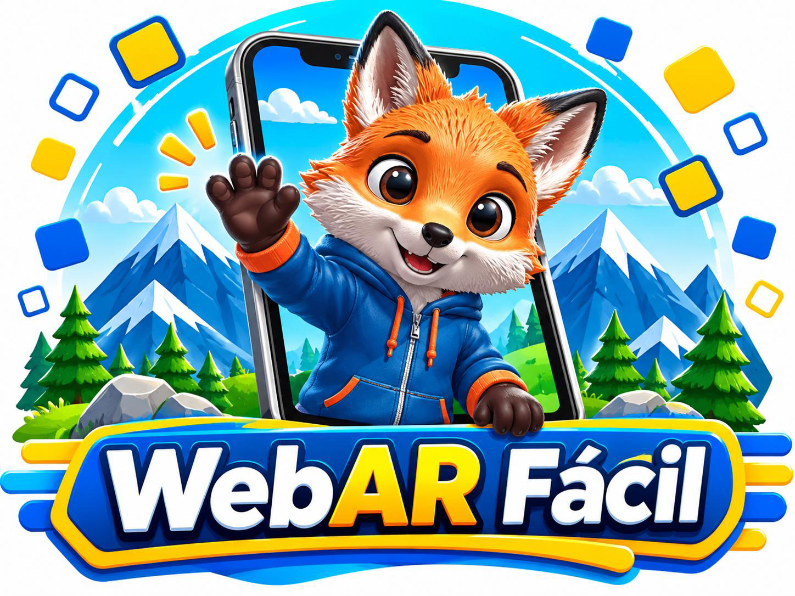

34. Seguimiento de una etiqueta curva
Usa el JPG o PNG de la etiqueta desplegada y mide la parte recta del envase. Si puedes, elige papel mate. Al detectar la etiqueta, un aro abraza el envase y Kai aparece encima.
Cargando WebAR Fácil…
Etiqueta de prueba para imprimir
Imprime a escala 100 % y verifica que el ancho sea 100 mm. Pega la etiqueta sin arrugas sobre un envase de 66 mm de diámetro o introduce su diámetro real antes de iniciar.

El ancho se mide con una cinta flexible siguiendo la curva. El alto se calcula a partir de la proporción de la imagen. Esta prueba es experimental y funciona con secciones cilíndricas. Gira el envase lentamente manteniendo una porción con detalles frente a la cámara.